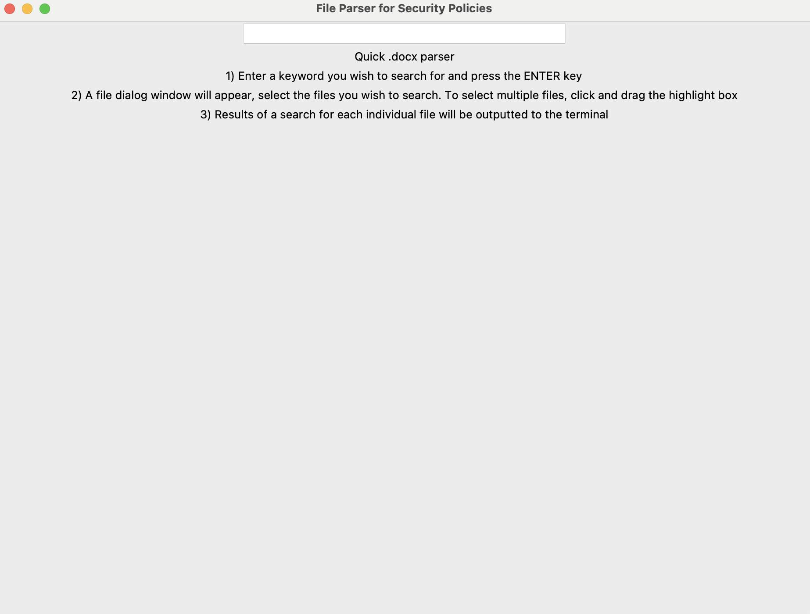

Parsing Script
This Python script allows a user to automate the process of searching for a keyword across multiple .docx files. When run, the user is prompted with a simple Graphical User Interface (GUI) that contains a search bar, asking for the keyword to search for.
